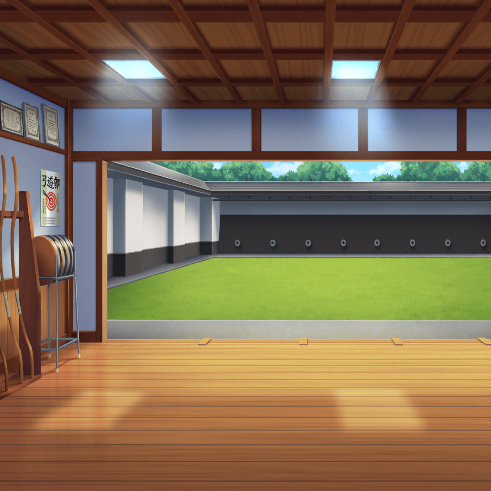

花咲川女子学園 弓道場
紗夜
では、始めましょうか
燐子
す……すみません……部活……お休みなのに……
紗夜
いえ。
顧問の先生に相談したら、快く鍵を開けてくれましたから、
気にしないでください
燐子
……ありがとうございます
紗夜
では、まずは弓道における心得から説明しますね。
道具の細かい名称などは、また次の機会にということで
燐子
は……はい……
紗夜
まず勘違いして欲しくないのは、弓道とは
的にあてることを目的とした競技ではないということです。
あくまで武道。一番の目的は、心身の鍛錬にあります
紗夜
弓を射るという一連の所作を通して、心身を鍛える。
その意識こそが、弓道においてはとても大切なんです
燐子
わかる、ような……気も……しますけど……
紗夜
まあ、なかなかなじみのない考えかもしれませんね。
そうですね……白金さんは、『正射必中』という言葉を
聞いたことがありますか？
燐子
い……いえ……
紗夜
『正射必中』とは、
正しく射られた矢は、必ず的にあたる、という意味です
紗夜
つまり、『的にあたる』というのはあくまでも、
『正しく弓を射る』ということの結果でしかないんですよ
燐子
……問題は……的にあたるか、ではなくて……
正しく弓が引けるか……ということですか？
紗夜
その通りです。
あの、良ければ今日、白金さんも弓を引いてみませんか？
やはり、実際に触れてみるのが一番だと思うので
燐子
え……その…………は……はい……
紗夜
では、まずは私が弓を引いて見せますね。
先程の話を意識して見ててください
燐子
はい……わかりました……
燐子
（……弓を構える、氷川さん……
とても……凛々しくて、かっこいい……）
紗夜
……っ
燐子
……！ 的の、真ん中に……す、すごいです
紗夜
ありがとうございます。
では、白金さんの練習に移りましょう
15分後
燐子
ゆ……弓を引くにも……ずいぶん、力がいるんですね
紗夜
その弓はまだ弱いほうなんですけど……引くのは
難しそうですか？
燐子
……い、いえ……これくらいなら……なんとか……
紗夜
それなら良かったです。
では、さっき教えた通りに、ゆっくりと弓を引いてみてください
燐子
（まずは、左足を……的に向かって、半歩……それから……
矢と、同じくらいの幅で……
姿勢を、整えたら……弓を、つがえて…………放つ……）
燐子
（う……腕が……震える……）
燐子
……っ……
紗夜
初めてで、ここまでキレイに引けるなんて……でも、残念ながら
的は外れてしまいましたね
紗夜
もう一度、今度は矢を番える位置を少し低めにして
引いてみてください
燐子
……低めに……？ ……はい
燐子
（さっきと、同じように……少しだけ低く…………）
燐子
……っ
紗夜
的に届いていない……弓手（ゆんで）が緩んでいる……？
紗夜
白金さん、気にしないでくださいね。初心者が的にあてるのは
本当に難しいことなので……
燐子
…………もう一度……
紗夜
え？
燐子
もう一度……いえ……せ……せめて……的に、あたるまで……
やらせてください……
紗夜
白金さん
紗夜
……わかりました。
白金さんの納得いくまで、おつき合いしましょう
30分後
燐子
ぜ……ぜんぜん……あたりません……
紗夜
次で10射目ですか。
結構引きましたが、まだ的には遠いですね……
燐子
……っ……もう一度…………あっ
紗夜
白金さん！？ 大丈夫ですか？
――親指の付け根に傷が……
紗夜
親指の付け根は矢枕と言われていて、慣れない人は
ケガをすることが多い場所なんです。きちんと説明していれば、
防げたかも知れないのに……ごめんなさい
紗夜
弓を引くのは、ここまでにしましょう。
このままでは、バンドにも支障をきたしてしまいます
燐子
いえ……大丈夫、です……
紗夜
ですが……
燐子
的に、あたるまでは……やりたいんです。
すみません、でも…………お願いします